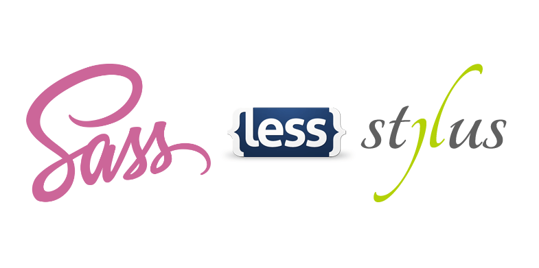

Крім вільного володіння базовими технологіями (HTML, CSS і JavaScript), розробник повинен вміти використовувати безліч допоміжних інструментів. Один з таких інструментів - це CSS-препроцесор - надбудова, що розширює CSS-синтаксис, полегшує написання, підтримку і рефакторинг коду. Препроцесори дозволяють використовувати конструкції, які прискорюють і спрощують написання коду.
Найпопулярніші препроцесори - це SASS, LESS і Stylus. Всі вони схожі і вирішують одне завдання, тому достатньо вибрати і використовувати один. Найпопулярніший препроцесор - SASS і його синтаксис SCSS.
✅ Переваги:
❌ Недоліки:
Спочатку препроцесор SASS мав однойменний синтаксис - SASS. Для опису вкладеності він використовує відступи (пробіли або таби), замість фігурних дужок, що знижує читабельність і підвищує ймовірність зробити помилку. Файли з цим синтаксисом мають розширення .sass, наприклад main.sass.
/* ❌ Старий синтаксис SASS */
.box
width: 400px
height: 400px
background-color: teal
&:hover
background-color: orange
Сьогодні використовується синтаксис SCSS (Sassy CSS), який є розширенням оригінального CSS-синтаксису. Це означає, що будь-яке допустиме значення в CSS-стилях буде працювати і в SCSS. Файли з цим синтаксисом мають розширення .scss, наприклад main.scss.
/* ✅ Новий синтаксис SCSS */
.box {
width: 400px;
height: 400px;
background-color: teal;
&:hover {
background-color: orange;
}
}
Браузер не розуміє синтаксису спеціальних конструкцій SASS, тому код препроцесора необхідно перетворити (скомпілювати) в CSS. Способів компіляції досить багато: різні консольні утиліти, збирачі і плагіни редактора.
Процес розробки зводиться до таких кроків.